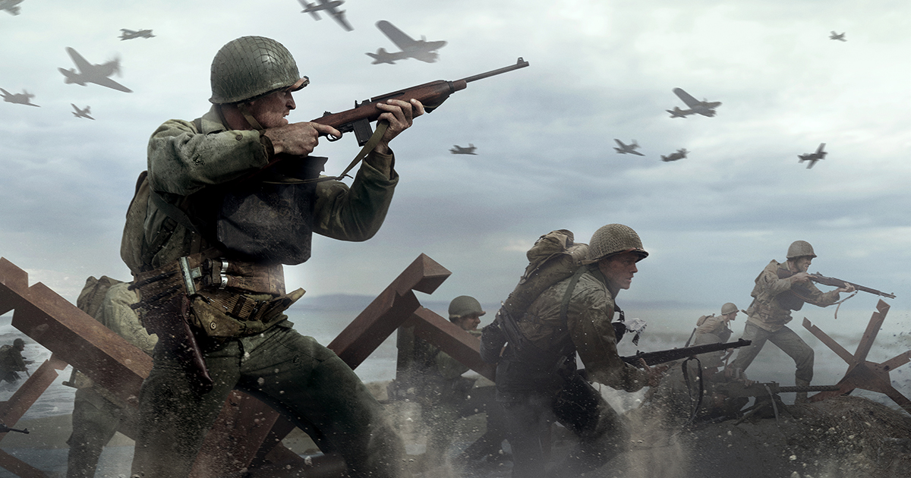

La Seconde Guerre mondiale a été le résultat de deux décennies de tensions internationales. Elle éclate suite à la volonté d'expansion d'Hitler qui cherche à conquérir « l'espace vital » qu'il estime nécessaire au peuple allemand. Cette guerre oppose de 1939 à 1945 les forces de l'Axe (IIIe Reich allemand Italie Japon) aux alliés (France-Grande-Bretagne URSS États-Unis) C'est aussi une guerre de haine raciale et de violence extrême qui fait 50 millions de morts, dont de nombreux civils.
La Seconde Guerre Mondiale éclate suite à la volonté d'expansion d'Hitler qui cherche à conquérir « l'espace vital » nécessaire au peuple allemand. Cette guerre oppose de 1939 à 1945 les forces de l'Axe (IIIe Reich allemand Italie Japon) aux alliés (France-Grande-Bretagne URSS États-Unis.
La Seconde Guerre Mondial oppose de 1939 à 1945 les forces de l'Axe (IIIe Reich allemand Italie Japon) aux alliés (France-Grande-Bretagne URSS États-Unis.